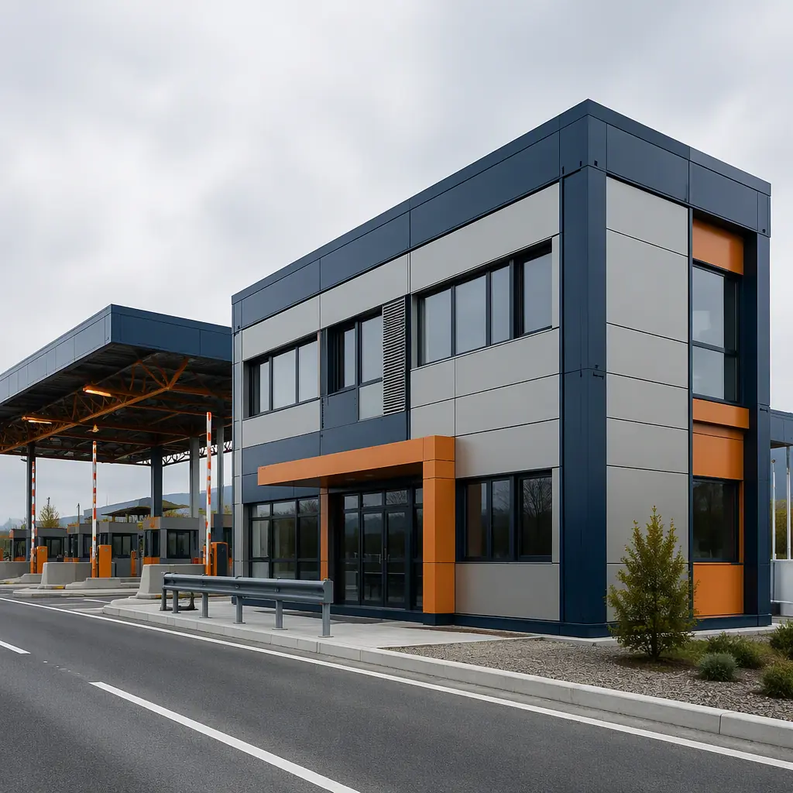
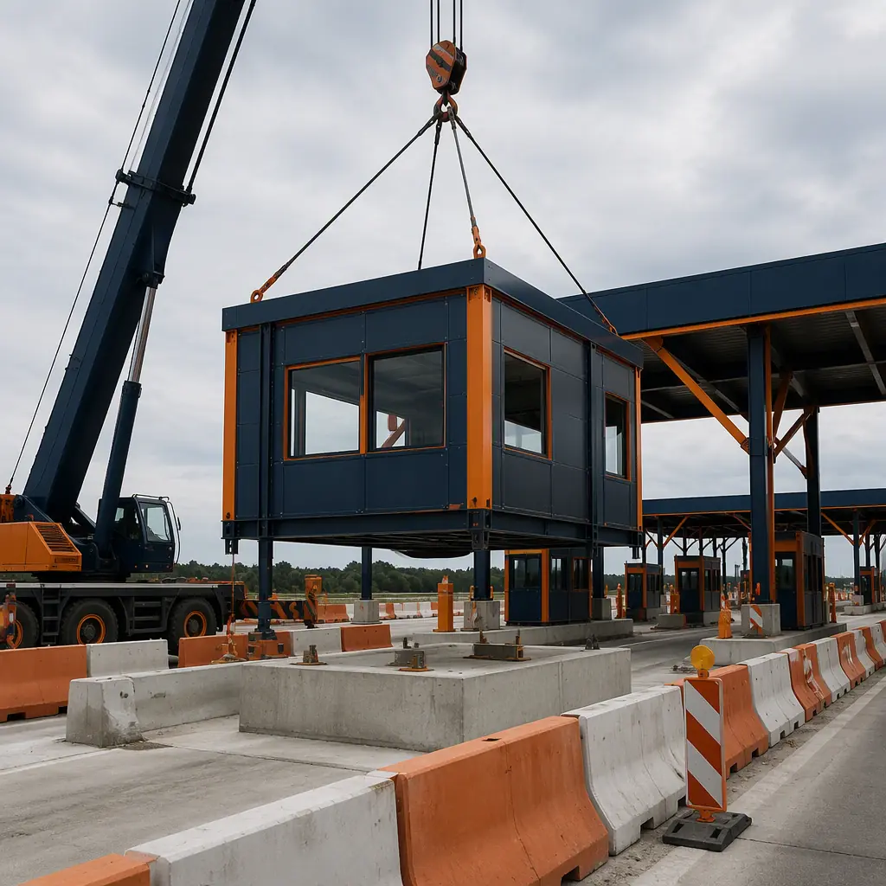
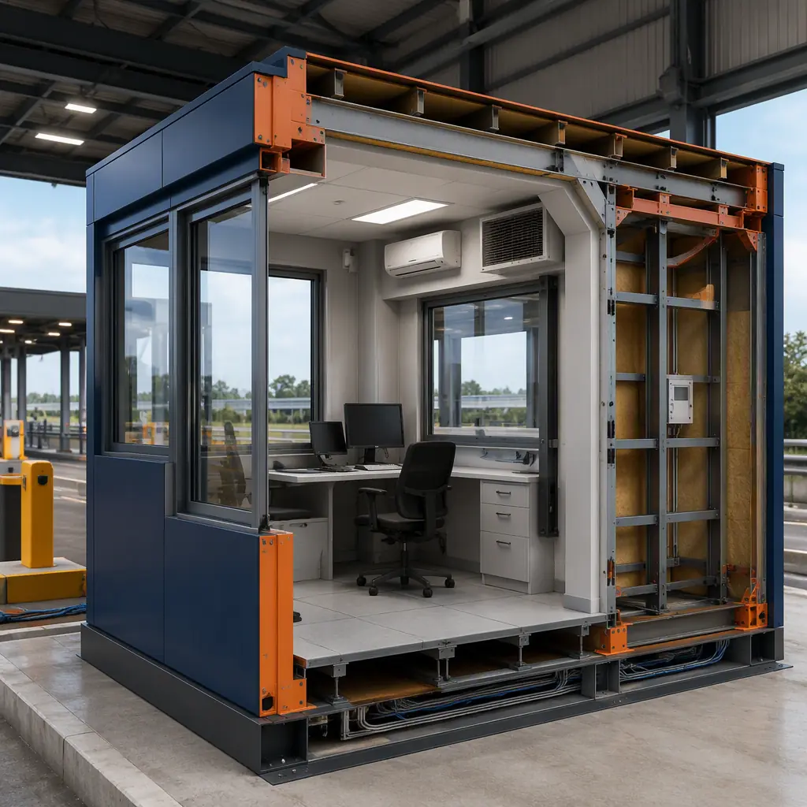
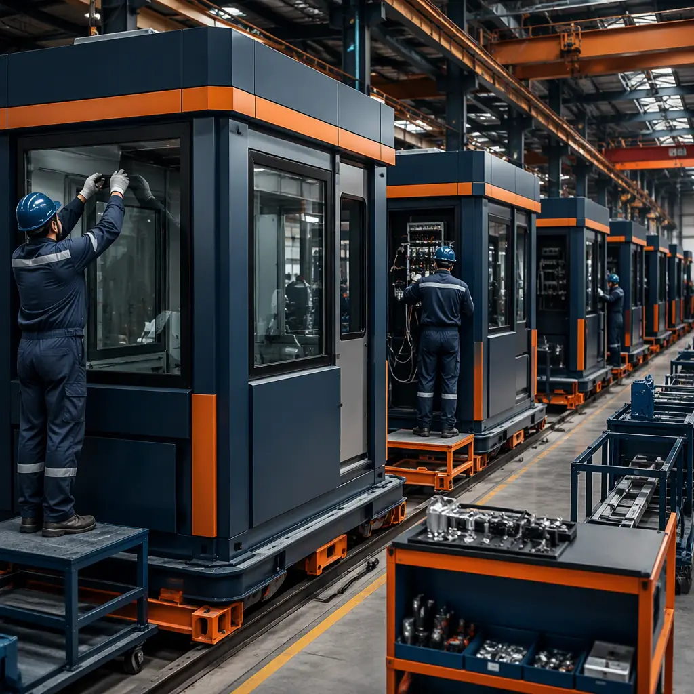
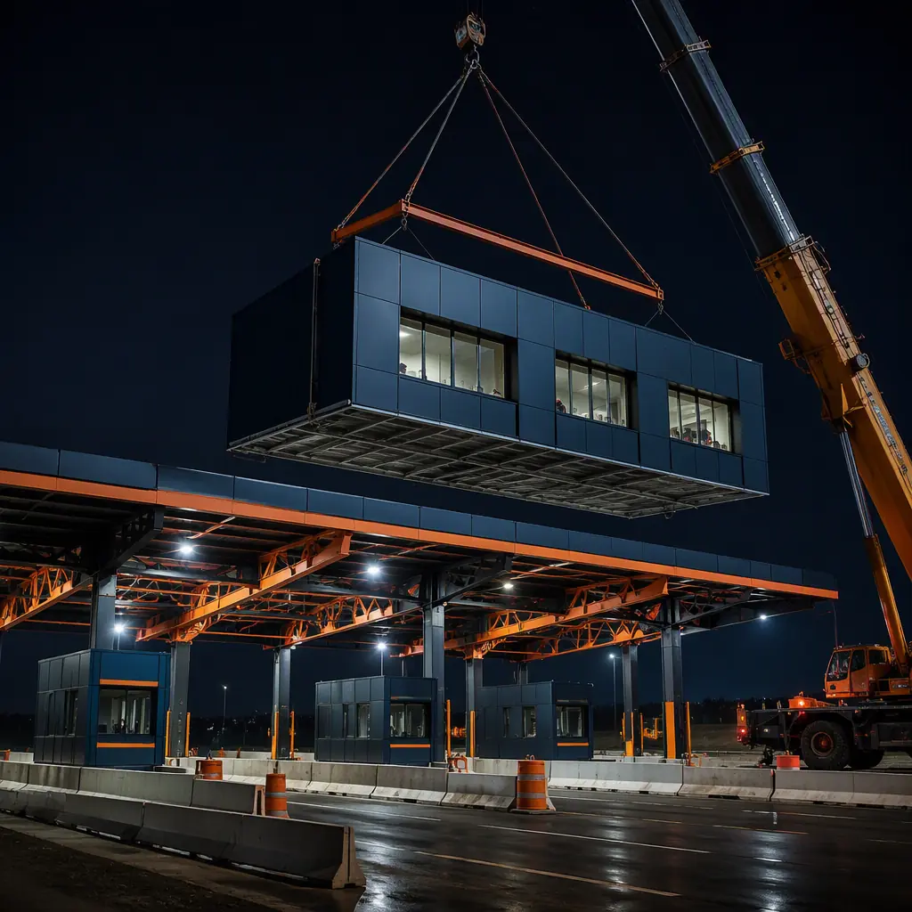

Toll authorities face a construction constraint that most building owners never encounter: the worksite is a live highway. Every day of lane closure costs revenue, congests commuters, and draws political scrutiny — so a toll plaza project measured in months of on-site work is measured in months of toll revenue lost. Modular prefabricated construction inverts the delivery model: toll booths, canopy structures, and plaza administration buildings are factory-built while the highway stays open, then installed in concentrated overnight and weekend lane closures measured in days, not months. A single toll booth module arrives pre-wired with its HVAC, lighting, security glazing, and toll equipment raceways installed — the lane reopens to traffic in one shift. A full four-lane plaza with canopy and administration building can be delivered in 20–28 weeks from design freeze while conventionally consuming 12–18 months of lane closures and site work. The same government-infrastructure delivery logic we document for modular government and municipal buildings and modular weigh stations and scale houses applies at the toll plaza, with highway-specific engineering — canopy loads, vehicle-impact resistance, ITS integration — layered on top. This guide covers the plaza building program, toll booth and canopy modules, administration facilities, the all-electronic tolling transition, cost structure, and the procurement path for DOT and toll-authority projects.

Why Toll Plazas Break Conventional Construction
Toll facility sites concentrate constraints that push owners toward factory delivery:
- Lane closures are the real cost. A conventional plaza build closes lanes for months; a modular build limits closure windows to module-setting nights and weekends. The off-peak installation model follows the same phasing discipline we document for modular construction project timelines.
- Working at the roadside is hazardous and slow. Conventional construction beside live traffic requires full-time traffic control, temporary barriers, and night work with all its productivity penalties. Factory production moves the labor off the highway entirely; the field scope shrinks to foundations, utilities, and the crane campaign.
- The program repeats across lanes and plazas. Toll booths are identical modules repeated across a plaza, and the same plaza design repeats across a network — the repeatable-design economics we document for modular franchise and chain rollout construction, applied to public infrastructure.
- Security and durability specs are stringent. Toll facilities carry vehicle-impact and forced-entry requirements, ballistic-rated glazing at border crossings, and 30+ year service-life expectations — all best met with factory-controlled steel-frame construction.

Toll Booth Modules — The Operator's Workplace
A modern toll booth is a compact, heavily serviced workspace: typically 6–8 ft wide, 10–12 ft deep, and 9–10 ft tall, with HVAC sized for continuous operation in a steel box, security glazing rated for the facility's threat level, raised access flooring for toll-equipment cabling, and ergonomic layout for an operator who may sit an eight-hour shift. Factory-built booth modules arrive with all systems installed and tested: HVAC, lighting, power distribution, communications, and the raceways for toll collection equipment and cameras. For all-electronic and hybrid plazas, the booth module converts to a monitoring and customer-service station — the same module, reconfigured interior — so an authority can transition staffing models without demolishing infrastructure. Booth modules are craned onto prepared foundations in a single night shift, connected to network and power, and returned to service. The MEP density of the booth module follows the same discipline we document for modular electrical and switchgear buildings.
Canopy Systems & Lane Infrastructure
The toll canopy — the steel structure spanning the lanes that shelters booths, signage, and toll equipment — is the most visible element of a plaza and the one most suited to prefabrication. Canopy modules are factory-fabricated steel frames with roof panels, lighting, signage mounts, and equipment housings installed, then bolted together across the lane span during overnight closures. Because the canopy is steel-on-concrete-pier construction, it coordinates cleanly with the modular booth foundations below — the foundation engineering follows our modular foundation systems guide. The result is a full plaza lane structure installed in days rather than the weeks of field steel erection a conventional canopy requires.

Administration & Plaza Support Buildings
Behind the lanes, every plaza needs an administration building — typically 5,000–15,000 sq ft of revenue-processing offices, break rooms, maintenance shops, and storage — plus, at major facilities, a separate building for toll enforcement and a maintenance facility for lane equipment. These are delivered as standard commercial modules: office modules with the building's MEP installed, break and training rooms finished, and shop modules with heavy-duty floors and bay doors for equipment servicing. The administration building program follows the same logic we document for modular office buildings, and the campus layout — admin building, booths, canopy, and utilities coordinated on one site model — follows our modular BIM and digital workflow guide.
The All-Electronic Tolling Transition
The industry's biggest structural shift — from staffed lanes to all-electronic tolling (AET) — is reshaping what toll authorities build. AET plazas need fewer booths and more infrastructure: gantry-mounted readers, enforcement camera arrays, and a larger back-office building for violation processing and customer service. Modular delivery supports both ends of the transition: authorities replacing staffed plazas can repurpose booth modules as monitoring stations, while new AET facilities arrive as pre-wired gantry and back-office packages. Because the modules are reconfigurable, an authority can phase the transition — staffed lanes today, AET conversion next year — without stranding capital in buildings that become obsolete. The phased-transition planning follows our modular additions and expansions guide, and the ITS and network integration follows modular smart building technology.
Border Crossings, Express Lanes & Managed Lanes
Beyond classic highway plazas, the same modular program serves border inspection facilities, express-lane tolling, and managed-lane installations. Border facilities add a security layer — ballistic-rated glazing, hardened entry modules, and inspection rooms with evidence-handling finishes — factory-installed to a consistent standard across a port of entry. Express and managed lanes deploy compact tolling modules and enforcement stations along a corridor, delivered in overnight windows with zero corridor closure. These applications share the truck-stop and weigh-station program logic we document in modular truck stops and travel plazas and modular transit facilities and bus depots.
Cost Structure — Modular vs. Conventional Plaza Build
| Plaza Program | Conventional | Modular |
|---|---|---|
| Single toll booth module | $90–140K / 4–6 months | $70–110K / 8–12 weeks |
| 4-lane plaza: booths + canopy + admin (12,000 sq ft) | $5.5–8M / 12–18 months | $4.4–6.4M / 20–28 weeks |
| AET gantry + back-office facility | $3.2–4.8M | $2.6–3.9M |
| Lane-closure & traffic-control cost | 15–25% of budget | 3–8% of budget |
The 15–20% capital saving compounds with the largest hidden cost of plaza work — toll revenue lost to lane closures. For the full cost methodology, see our 2026 modular cost guide.


Compliance & Procurement for Toll Authorities
Toll facilities must satisfy DOT specifications, MUTCD signage and marking requirements, state fire and building codes, and increasingly cybersecurity requirements for ITS systems — plus, for border facilities, federal security standards. Factory-built modules address these systematically: materials and assemblies are documented with certification trails as they are installed, fire-rated construction is inspected in the factory, and ITS integration is tested before shipment. The documentation trail doubles as the compliance dossier for the authority's review — the same documentation approach we detail for modular factory QC systems. For authorities procuring through RFP, the procurement path for modular public infrastructure is covered in our modular RFP procurement guide.
Is Modular Right for Your Plaza Project?
Modular toll delivery delivers the strongest value for booth replacements where a single night-shift installation eliminates weeks of lane closure, full plaza rebuilds where the canopy and booth program repeats across lanes, AET transitions where the building program changes faster than conventional delivery can follow, border and managed-lane facilities where security-consistent factory construction matters, and any program where lane-closure cost exceeds the building cost. For authorities planning network-wide facility programs — the same plaza design across dozens of locations — the factory can produce identical module packages with a documented compliance trail, and the program financing and approval structure is covered in our modular construction lending guide.
Planning a toll plaza, booth replacement, or AET facility? Request our transportation facility documentation package — booth and canopy module specifications, DOT compliance support, and lane-closure schedule case studies. Contact the MODURA engineering team.